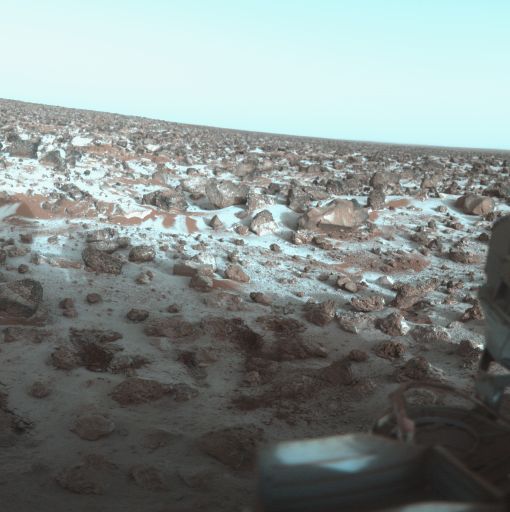

The Ice in Utopia (Mars)

NASA
Frost at the Utopia site on Mars
Viking 2 Lander image showing patches of ground frost at the Utopia Planitia site on Mars. The image was taken at 12:32 local time in late northern winter. The frost layer is extremely thin, only a few hundredths of a mm thick. The frost persisted at temperatures higher than the freezing point of carbon dioxide, and so must be water ice or some combination of water and carbon dioxide ice. This false color photo of the surface of Mars was taken by Viking Lander 2 at its Utopia Planitia landing site on May 18, 1979, and relayed to Earth by Orbiter 1 on June 7. It shows a thin coating of water ice on the rocks and soil. The time the frost appeared corresponds almost exactly with the buildup of frost one Martian year (23 Earth months) ago. Then it remained on the surface for about 100 days. Scientists believe dust particles in the atmosphere pick up bits of solid water. That combination is not heavy enough to settle to the ground. But carbon dioxide, which makes up 95 percent of the Martian atmosphere, freezes and adheres to the particles and they become heavy enough to sink. Warmed by the Sun, the surface evaporates the carbon dioxide and returns it to the atmosphere, leaving behind the water and dust. The ice seen in this picture, like that which formed one Martian year ago, is extremely thin, perhaps no more than one-thousandth of an centimeter thick. The view is looking towards the south southeast, the long boulder to the right is roughly one meter across.
This false color photo of the surface of Mars was taken by Viking Lander 2 at its Utopia Planitia landing site on May 18, 1979, and relayed to Earth by Orbiter 1 on June 7. It shows a thin coating of water ice on the rocks and soil. The time the frost appeared corresponds almost exactly with the buildup of frost one Martian year (23 Earth months) ago. Then it remained on the surface for about 100 days. Scientists believe dust particles in the atmosphere pick up bits of solid water. That combination is not heavy enough to settle to the ground. But carbon dioxide, which makes up 95 percent of the Martian atmosphere, freezes and adheres to the particles and they become heavy enough to sink. Warmed by the Sun, the surface evaporates the carbon dioxide and returns it to the atmosphere, leaving behind the water and dust. The ice seen in this picture, like that which formed one Martian year ago, is extremely thin, perhaps no more than one-thousandth of an centimeter thick. The view is looking towards the south southeast, the long boulder to the right is roughly one meter across.